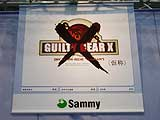
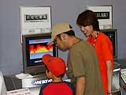
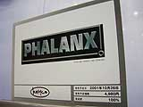
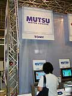

| #2 ゲームボーイアドバンス ライセンシータイトル体験コーナーレポート その３ |
ゲームボーイアドバンス ライセンシータイトル体験コーナーレポート その３ page1 ・・・ page2 |
| ● GUILTY GEAR X（仮称） サミー |
|
 ２Ｄ格闘ゲームのギルティギアゼクスを、アドバンスに完全移植。ゲームセンターでどっぷりハマっちゃった人もいるんじゃないかな？ 美麗グラフィック、キャラクターの華やかな動き、すべてアドバンス上で再現されます。もうこれは体験するしかないです！ 体験コーナーでは３つのキャラクターから好きなものを選べます。ＡＢボタン、ＬＲボタンを駆使してワザを入力。コンパクトなゲームボーイアドバンスだから、手にすんなり収まってプレイしやすいですね。今日はプレイヤーのみなさんからどんな必殺ワザが飛び出すでしょうか？ |
| ● 機械化軍隊 ケムコ |
|
 最強の軍隊を作り上げ、敵対する４つの軍事大国を倒していくリアルタイムシミュレーションゲーム。ユニットをレベルアップしたり、パーツを組み替えたりしながら、自分の軍隊を強くしていきます。まずは資源を採掘し、科学や軍事のレベルをアップしましょう。 体験コーナーではいくつかのミッションをプレイできます。チュートリアルがとっても親切なので、低年齢のお子様でも大丈夫。ベースキャンプを設営し、必要な資源を掘り起こしキャンプに集めましょう。まとめて指示を出せば、あとはユニットが動いてくれます。体験プレイでもある程度じっくり触れるので、シミュレーションファンはぜひどうぞ。 |
| ● ファランクス ケムコ |
|
 往年の名作シューティングゲームが復活。爽快感いっぱいの横スクロールシューティングです。敵の吐き出すミサイルをよけながら、さまざまな武器で攻撃し、最終ボスをめざします。 うまくパワー補給をしたり、アイテムを拾っていけば、体験プレイでもたっぷり遊べます。４種類のオプション兵器と、３種類のサブウエポンを駆使して、大小の敵を撃破していきましょう。アドバンスの横長画面は、横スクロールシューティングにぴったりですね。画面をめいっぱい使ってプレイできるので、面白さも倍増です。 |
| ● MUTSU（仮称） トミー |
|
 インタラクティブペットのＭＵＴＳＵがデジタルの世界に登場。これからは可愛いＭＵＴＳＵと、いつでも一緒にいられます。アドバンスでしか楽しめない要素もいっぱい。入力で言葉や歌を教え、ペットを育てていきます。いつのまにか、ＭＵＴＳＵが変化してきてビックリ。女の子たちに大人気のアロマテラピーの機能もあるんです。 体験コーナーでは、言葉の入力、メロディの入力ができます。ＭＵＴＳＵのちょっとおとぼけな反応が面白いですね。メロディは着メロのようにかんたんな楽譜で入力できます。学校で習った歌なんかを入力してみてはいかが？ 家族みんなにおススメの癒し系コミュニケーションゲームです。 |
ゲームボーイアドバンス ライセンシータイトル体験コーナーレポート その３ page1 ・・・ page2 |
| 前のレポートへ | 次のレポートへ |
|
|